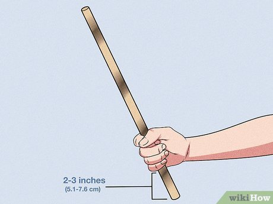
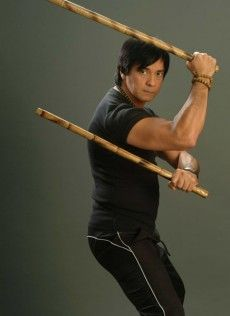
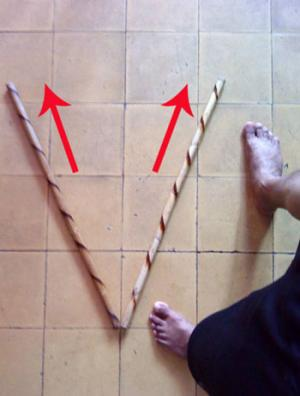

1. Basic Grip
A proper grip is essential in Arnis to deliver strong strikes without disarming yourself.
- Hold the stick one fist away from the base (the punyo).
- Wrap your four fingers tightly around the stick.
- Place your thumb over your index finger. Keep your grip firm but relaxed to allow wrist flexibility.

2. Basic Fighting Stance
The fighting stance provides balance, mobility, and readiness for both offense and defense.
- Stand with your feet shoulder-width apart.
- Step your dominant foot forward.
- Keep your knees slightly bent to lower your center of gravity.
- Hold your weapon hand in front at chest level, and your free hand near your chest.

3. The 12 Striking Techniques
Click on any technique below to see a demonstration and description.
1 Left temple
2 Right temple
3 Left shoulder
4 Right shoulder
5 Stomach thrust
6 Left chest thrust
7 Right chest thrust
8 Right lower leg
9 Left lower leg
10 Left eye poke
11 Right eye poke
12 Crown of head
4. Basic Blocking Techniques
Defense is just as important as offense. Blocking involves meeting force with force or redirecting strikes.
- Inward Block: Used against strikes to the left side of your body.
- Outward Block: Used against strikes to the right side of your body.
- Downward Block: Used to defend against lower strikes to the knees.
- Rising Block (Umbrella): Defends against overhead strikes.
5. Basic Footwork
Footwork is the foundation of evasion and positioning. Arnis heavily relies on the Triangle concept.
- Forward Triangle: Stepping diagonally forward. Used for closing distance.
- Reverse Triangle: Stepping diagonally backward. Used to retreat with an angle advantage.
